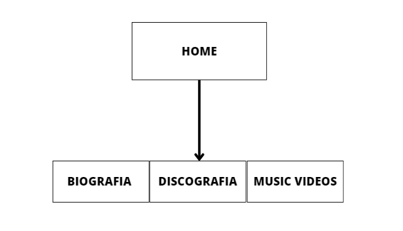
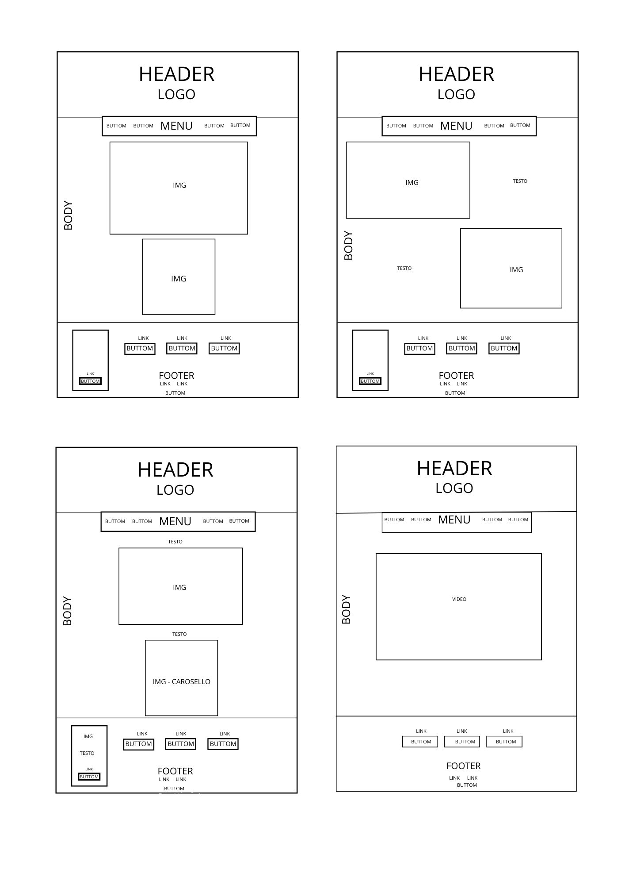
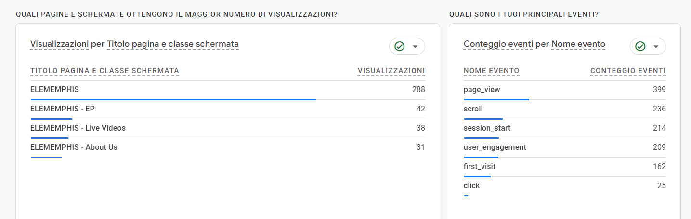

DOCUMENTAZIONE
ABSTRACT
Elememphis è uno spazio online dedicato all'omonima band indie/pop di Reggio Emilia, formata da Alessandro Tarquini alla voce, Igor Fornaciari alla chitarra, Francesco Schiatti al basso e Diego Fornaciari alla batteria. In questo sito l'utente avrà accesso diretto sia alla biografia della band che raggiungere collegamenti rapidi alla loro musica e all'acquisto del loro EP.
PROJECT MANAGEMENT PLAN
1. BENCHMARKING
OBIETTIVI
Il sito “ELEMEMPHIS” è un sito divulgativo, con obiettivi ben precisi:
• Promuovere e Aumentare la visibilità online della band.
• Creare una vetrina online della band.
• Coinvolgere i fan esistenti e attirarne di nuovi.
• Promuovere il loro album e i concerti in programma.
TARGET
Il target utente a cui il sito si rivolge è molto ampio ed eterogeneo, ma si può individuare un target utente primario, senonché:
• Appassionati di musica indie, pop/funk, principalmente giovani di età compresa tra i 15 e i 40 anni, data la giovane età della band.
• Fan della band che vogliono rimanere aggiornati su tour, eventi e nuovi rilasci.
COMPETITORS
Indididuare dei competitors è stato abbastanza complesso, poichè non è solito per gli artisti, in particolare quelli emergenti, avere un proprio sito web per promuovere la propria musica e il proprio progetto. Difatti normalmente si utilizzano account Instagram, Facebook, Spotify, Soundcloud, o altre piattaforme adibite alla divulgazione della musica. Tuttavia, per selezionare i maggiori competitors ho deciso di analizzare alcuni degli artisti o band emergenti che producono circa lo stesso genere di musica degli Elememphis, al fine di poter fare un confronto adeguato a livello di grafica, quantità e qualità di informazioni fornite e struttura del sito in generale. I due competitors individuati sono:
- Pinguini Tattici Nucleari: sito web utilizzato per comunicare le date del tour e shop per la vendita del merchandising.
- Eugenio in Via di Gioia: sito web più completo, ma possiede un'unica pagina che necessita di essere scorsa completamente per ottenere tutte le informazioni, le quali sono raggiungibili schiaccciando dei bottoni che rimandano alle date del tour, i biglietti, lo shop online, l'iscrizione alla newsletter e alla stesura di una recensione/pensiero.
2. STRUTTURA E LAYOUT
ARCHITETTURA DEL SITO e WIREFRAME


LOOK AND FEEL
Ispirandomi alla nuova tendenza di flat design, ho realizzato un sito minimalista, semplice e intuitivo, che riprende l’identità della band reggiana.
In particolare, mi sono ispirata alle forme e colori della copertina del loro primo album “ELEMEMPHIS”, Per questo ho scelto un grigio scuro RGB (#333) per lo sfondo, che riprende il colore dell’album della band e il colore nero per il footer e la transizione dei bottoni nel menù, al fine di restituire il loro stile deciso ed elegante. Inoltre, tali colori, permettono di rendere ben visibile e ben contrastato il testo, il quale ho deciso di lasciarlo bianco, per facilitarne la lettura.
I font scelti sono: “Squada One” per i titoli, il quale si avvicina molto al font utilizzato in precedenza dalla band per il logo, il quale ha uno stile moderno e deciso; e il font “Big Shoulders Text”, anch’esso un font sans-serif con gli estremi netti e lineari che permette una facile lettura dei testi.
Infine, ho deciso di inserire numerose foto che rappresentano la band, sia durante i concerti che in shooting fotografici, al fine che non si disperda la loro identità.
3. LINGUAGGI E STRUMENTI
LINGUAGGI: HTML5 (linguaggio di markup), CSS3 (linguaggio di stile)
STRUMENTI:
Sublime Text 2 (per la scrittura del codice)
Bootstrap
Google Fonts (per i caratteri)
Fontawesome (per le icone)
Github (per la pubblicazione del sito)
Google Analytics (per monitorare le visualizzazioni)
Adobe Photoshop 2023 (per la grafica delle date del tour e il wireframe)
Spotify, Itunes e Youtube (per la promozione e l’ascolto)
Openmusic(per l'acquisto del disco)
Instagram e Facebook (per la promozione)
Microsoft Clipchamp (per il video)
Canva (per la realizzazione del wireframe)
COMMUNICATIOIN STRATEGY
BACKGROUND
Sulla base del benchmarking effettuato, ho potuto notare che al giorno d’oggi le band e i cantanti indie/pop italiani raramente possiedono un sito web per la promozione e la divulgazione della loro storia, facendosi conoscere come band tramite la stesura di una biografia o semplicemente la spiegazione di un album. Anzi, negli ultimi anni si predilige sempre di più la sponsorizzazione tramite social network: metodo molto più diretto per attirare un pubblico giovane. Ma è altresì limitante se si capita in prima istanza sul sito web.
Il sito dei Pinguini Tattici Nucleari, per esempio, i quali hanno un target primario simile a quello degli Elememphis, utilizzano il sito soltanto per la vendita del merchandising e dei loro gadget, dando per scontato che qualsiasi utente conosca la loro storia e la loro fama.
Il sito di “Eugenio in Via di Gioia” invece ha uno stile più minimalista e pulito e possiede tutte le informazioni riguardo la biografia della band, ma sfruttando la nuova tecnica dello scrolling che rende la pagina potenzialmente infinita, per scoprire le informazioni riguardanti la storia della band è necessario scorrere tutta la pagina e leggere tutte le informazioni prima di trovarle.
OBIETTIVI COMUNICATIVI
Prendendo in considerazione il target audience che si mira raggiungere, il social migliore per la promozione del sito è sicuramente Instagram e la creazioine di un passa parola su Whatsapp. Vorrei raggiungere almeno 100 nuovi utenti che visitano il sito, almeno 200 visualizzazioni della pagina Home e raggiungere almeno tre Paesi al di furoi dell'Italia, sia in Europa che in altri continenti.
TARGET AUDIENCE
Il sito è pensato per un gruppo demografico eterogeneo che comprende sia fan abbonati alla band, che utenti che mostrano un particolare interesse per la musica indie/pop. Sicuramente essendo loro una band emergente, che suona principalmente nei dintorni di Reggio Emilia. L’audience primaria sono sicuramente i residenti di tali zone, ma creando questo sito si mira a colpire un pubblico più ampio, che può andare oltre i confini geografici e soprattutto molto vario a livello di età.
MESSAGGIO
Ovviamente essendo gli Elememphis una band già formata e con una propria identità, il sito web non mira a cambiare lo stato della band attuale, ma piuttosto il target audience con la visita del sito web ha la possibilità di scoprire la storia del gruppo reggiano e del loro inedito più famoso, la sua composizione e le ultime uscite. Inoltre, gli utenti, se apprezzano il contenuto del sito, hanno la possibilità di accedere direttamente alle playlist di Spotify, YouTube e iTunes, e inoltre acquistare direttamente l’album soltanto con un semplice click.
PROMOZIONE
Il sito è stato promosso aggiungendo il link nella “biografia” dell’account Instagram degli Elememphis,il quale presenta un seguito abbastanza importante, dove possiamo andare a mirare direttamente il nostro target audience primario, senonché i fan della band che desiderano rimanere aggiornati. Inoltre è stato pubblicizzato e condiviso nel privato dalla sottoscritta e dalla band stessa, inviando la URL a vari contatti e gruppi su Whatsapp, al fine di raggiungere utenti che non hanno mai sentito parlare della band prima.
VALUTAZIONE DEI RISULTATI
Gli obiettivi che mi ero prefissata erano:
- Raggiungere più di 100 nuovi utenti unici che visitano il sito : raggiunto (162 nuovi utenti)
- Raggiungere almeno 200 visualizzazioni della pagina home: raggiunto (288 visualizzazioni)
- Raggiungere almeno tre Paesi al di furoi dell'Italia, sia in Europa che in altri continenti: posso affermare di aver raggiunto una buona audience internazionale raccogliendo visualizzazioni in Italia, Francia, Germania, Ungheria, Bulgaria, Indonesia, Brasile, Spagna e Regno Unito (8 nuovi Paesi).


P.S. Non tutte le pagine del sito risultano responsive ad ogni dispositivo, probabilmente per una sovrascrizione di codice che non ho trovato e non ho pututo risolvere.
Ho utilizzato il codice fornito da Bootstrap per questo passaggio, ma nonostante questo non sono riuscita ad adattarlo. Mi scuso per il disagio nella fruizione del sito su dispositivi di piccola e media dimensione.